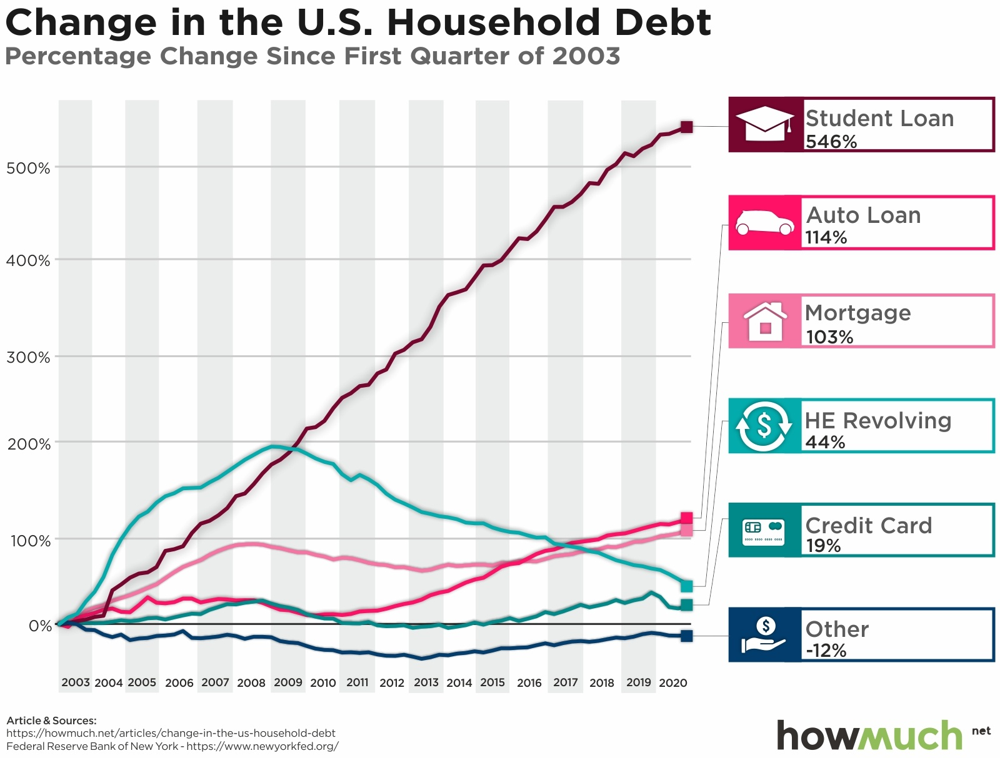

This exercise aims to apply the Trifecta Checkup framework to analyse an existing data-visualisation chart. The task requires checking whether the chart's dataset aligns with its research question, verifying values against the original data source, and evaluating data quality and limitations. The overall goal is to practise critical reading of charts and identify potentially misleading content in public-facing data graphics.
Following the Junk Charts Trifecta Checkup framework (Fung, 2014), the alignment between the Data (D) and the Question (Q) in this visualisation is strong.
The Question(Q): HowMuch.net asks: "How has total household debt changed across the U.S. over the last several years?" This visualization further breaks down this broad issue to analyze the percentage change trends for each debt category from the first quarter of 2003 to the fourth quarter of 2020.
The Data(D): The visualisation is based on data in the Household Debt and Credit Report released by the Federal Reserve Bank of New York. The original source provides debt balances denominated in U.S. dollars, and HowMuch.net calculates percentage-change data for various debt categories (including student loans, auto loans and mortgage loans) covering 2003 to 2020. The dataset is directly relevant to the question.
The data is highly relevant to the question, because the variables (debt category, percentage change and time) directly correspond to the information needed to answer how household debt changes. The time range is clearly defined (2003‑2020), and a common reference quarter (Q1‑2003) is adopted to facilitate the comparison across different categories. However, one limitation of the underlying dataset is that the visualization presents a summary trend at the national level and does not subdivide the changes according to population or geographic subgroups, which may limit a more detailed understanding of the data.
Federal Reserve Bank of New York. (2021). Household debt and credit report [Data set]. https://www.newyorkfed.org/microeconomics/hhdc.html
Fung, A. (2014). Junk charts trifecta checkup. https://junkcharts.typepad.com/junk_charts/2014/03/the-trifecta-checkup.html
HowMuch.net. (2021, March 18). Charting 17 years of American household debt. https://howmuch.net/articles/change-in-the-us-household-debt